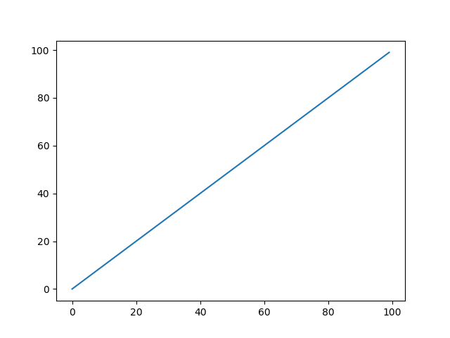

Basic plotting¶
import matplotlib.pyplot as plt
plt.plot(range(100))
Total running time of the script: ( 0 minutes 0.085 seconds)
import matplotlib.pyplot as plt
plt.plot(range(100))
Total running time of the script: ( 0 minutes 0.085 seconds)